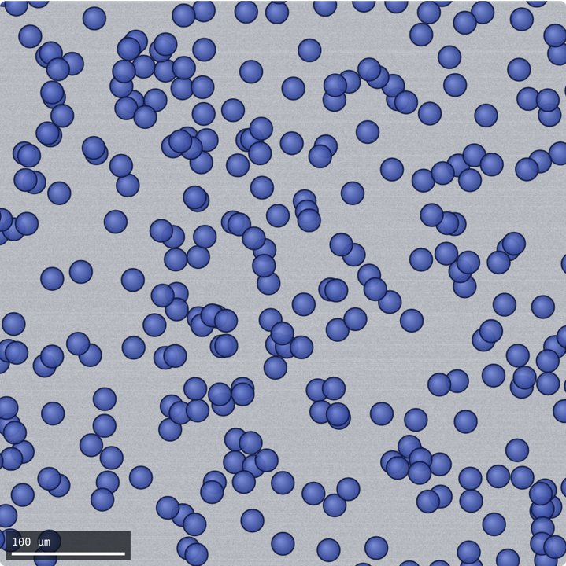

window ≈ 0.5 mm · dents r ≈ 10 µmLocal coverage
Shot Peening Coverage Simulator
How many passes does a given point need to reach 98 % coverage? Watch dents appear one by one and compare the measured coverage with the model.
- Inputs
- media flow rate ṁ, shot size and log-normal spread, dent radius r, jet size ΔX, traverse speed V
- Outputs
- τ(n) measured vs model, hit-count map, Poisson histogram, passes to 98 %
Open the simulator →
v1.2